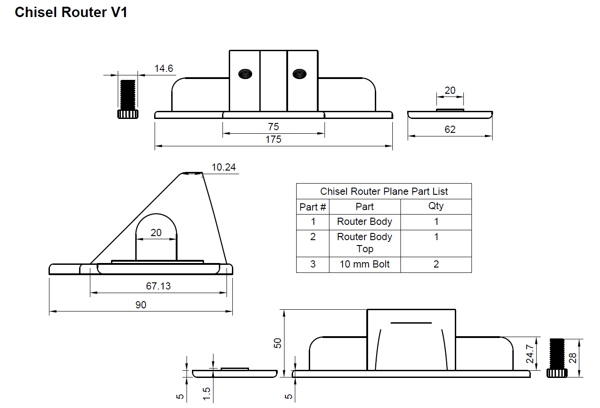
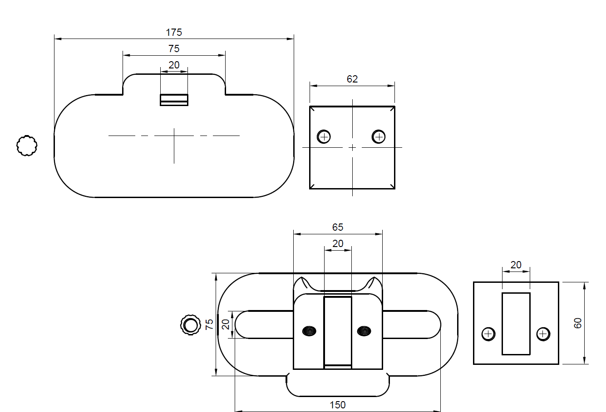
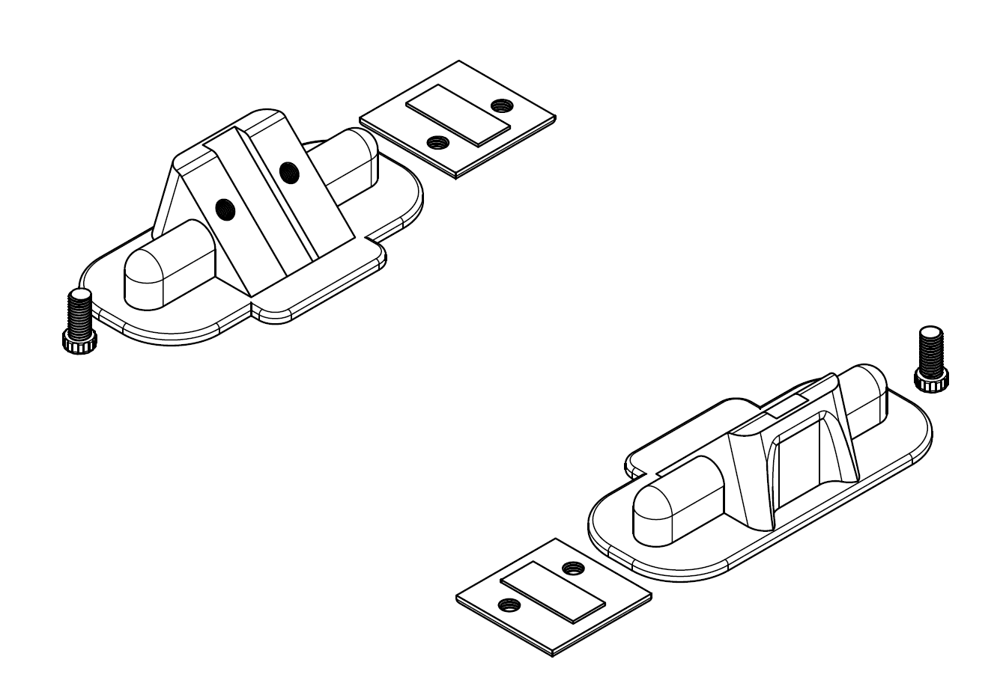

Project 1: 3D Printed Chisel Router Plane
Or How I Learnt You Can't 3D Print Everything.
As a student living in a flat I find the ammount of things I want to do being restricted by space, money, but most of all noise. Without a makers space, and being too young to really want to go to a menshed to build anything, and hang out with retirees my projects involving wood working are restricted to hand tools to keep noise to a minimum. The hand plane is the tool that eludes me partly because of price, and because they have become annoyingly hard to locate, so like any person with 3D printer, and no money I wanted to see if I could make one of my own
Adventures in Design
As I set out on my journey to create something useful I took inspiration from the "traditional" hags tooth plane, and a couple of youtube videos of Chisel planes that were basically just a chisel hammered through a board. I wanted something elegant, something with screws, something that would BREAK! which at this stage I hadn't expected. Working in fusion360 I spent an afternoon going from some initial sketches to a 3D model that I eventaully printed, and converted into the drawings you can see below.


Printers Gone Wild
Everything that goes well in the design phase goes wrong in the actual print, and this print is no different, this just for the sheer range of issues that I had pop up in the 7 attempts to print this lead to me tearing apart the printers extruder, cleaning, and regreasing various parts, and praying that it would somehow turn out, thankfully the print always failed early in the print so I didn't waste a huge ammount filament only time 40+ spent printing.
Does it Even Work?
Short answer, No!
Long Answer, Kinda sorta maybe...
It turns out that when something is usually made with steel or timber the design doesn't neccessarily translate to 3D printed plastic all that well. A combination of things is responsible for how this prototype (as i'm now calling it) turned out, a few design revisions are defintiely needed before I can get something that could be called reliable but in its current form it can roughly do its job, not well but it beats trying to do it by hand with a chisel so thats a small win in my books.